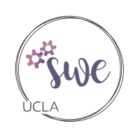
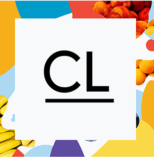

Hi. I'm Zian.
Thanks for dropping by! My name is Zian Chen, a soon-to-be third year student at UCLA, working to get a Bachelor's in Computer Science. My path to where I am now has not been easy, but along the way I've picked up multiple different skills and, arguably more importantly, how to deal with failure, learn the value of criticism, and rely not only on myself but those around me. Keep scrolling to track a few stops along the way!
SWE Dev was the first organization I joined and the one that taught me how to learn from the bottom up. In order to build our club's Event Portal, I worked on both the front and backend, primarily learning React and PostgreSQL to do so. I deal with a lot of categorical data that we use to improve useability.
I worked on the Tech Team to assist in hosting one of the largest hackathons in the nation; in fact, our virtual hackathon this year attracted over 1,000 participants. My contributions included designing and implementing the entire frontend for our website and live site in React, working to learn and develop the large code base and backend (written in Go and using PostgreSQL), and handle the technical transition to a virtual format. Next year, I will be taking on the position of Tech Director.
I spent a quarter at UCLA working on a Creative Labs project called Pinstagrad, which aimed to help improve rising seniors' graduation photo experience. I worked primarily as a backend dev, using Go and Firebase to store images. I also briefly dabbled in the frontend towards the end of the quarter, which used React. Not only did I pick up those skills, I also learned quite a bit about working in a small team and picked up tips on how to lead one successfully.
